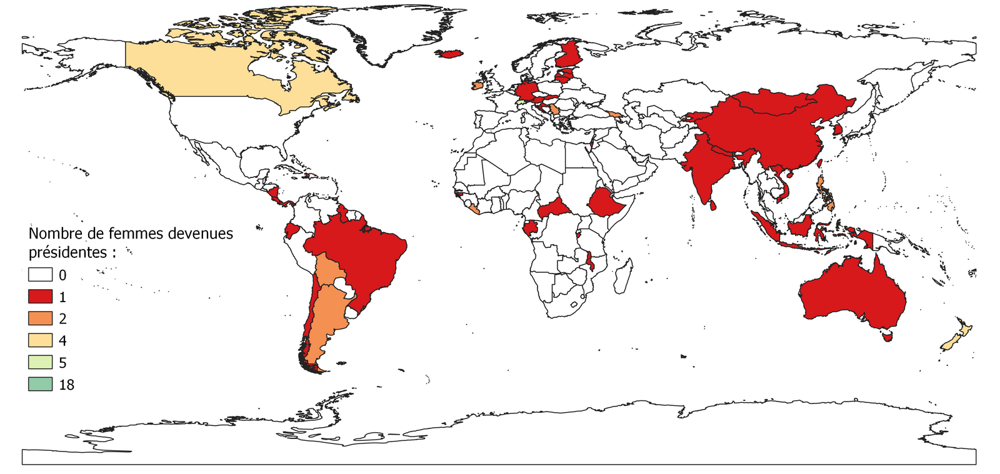
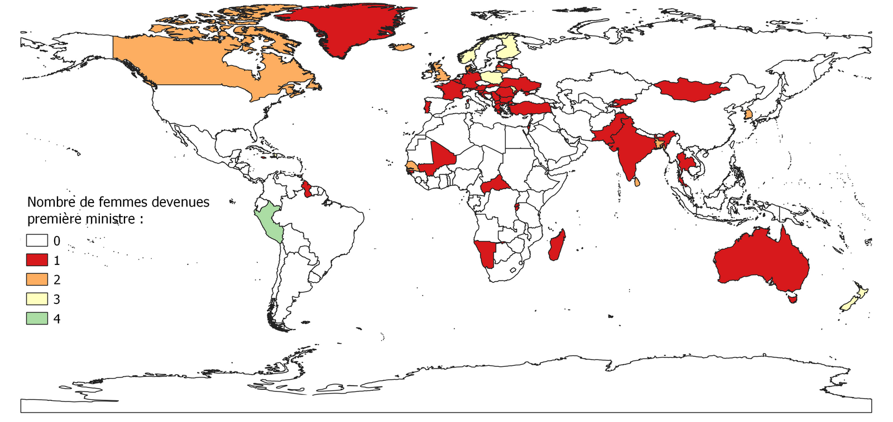

III. Femmes et pouvoir
Avant de commencer cette nouvelle partie, il semble important de faire un point sur les différents régimes politiques démocratiques, pour comprendre le rôle joué par les présidents et présidentes.
Nous allons commencer par le régime parlementaire, avec l’exemple du Royaume-Uni.
Un régime politique caractérise le fonctionnement des pouvoirs publics dans les démocraties. Il en existe trois. Le régime parlementaire comme au Royaume-Uni. Dans ce régime politique, le pouvoir exécutif se compose de deux personnes. Le souverain qui est aujourd’hui la reine Elizabeth II, elle n’exerce pas de pouvoir politique, elle a le rôle de « figure » représentative du pays. Et de l’autre côté, c’est le cabinet qui exerce le pouvoir exécutif avec à sa tête le Premier ministre qui doit être soutenu par la majorité de la Chambre des communes.
Le pouvoir législatif est composé de la Chambre des communes et de la Chambre des Lords, c’est de type bicaméral. Le pouvoir exécutif et législatif sont interdépendants. Le Premier ministre peut dissoudre le Parlement et être renversé par lui.
Un second régime, c’est le régime présidentiel, comme aux États-Unis.
Le pouvoir exécutif repose sur un président qui est élu au suffrage universel indirect. Il est à la fois le chef de l’Etat et le chef du gouvernement. Il dispose d’un droit de veto sur les lois votées par le Congrès. Le pouvoir législatif se compose du Sénat et de la Chambre des représentants ce qui forme le Congrès. Il vote les lois et le budget. Le président et le Congrès sont deux pouvoirs indépendants, ils ne peuvent pas se renverser.
Pour finir il existe un régime nommé le régime semi-présidentiel, comme en France.
On parle souvent de régime mixte car ils possèdent des caractéristiques du régime parlementaire et du régime présidentiel. Pour le pouvoir exécutif dans un régime mixte se compose du président et d’un gouvernement dirigé par le Premier ministre. Le président est élu au suffrage universel direct. Il est aussi appelé chef de l’Etat dont les fonctions sont tout d’abord la représentation extérieure, la promulgation des lois… Il peut faire appel au référendum ou dissoudre l’Assemblée nationale. Le Premier ministre est le chef du gouvernement. Le gouvernement est responsable devant le Parlement. Le pouvoir législatif est exercé par le Parlement composé de l’Assemblée Nationale et du Sénat. Les députés sont élus au suffrage universel direct pour 5 ans et les sénateurs sont élus au suffrage indirect pour 6 ans.
Pour illustrer les différents régimes politique qui existe dans le monde nous avons réalisé la carte ci-dessous.
Carte n°4 : Les régimes politiques
Il y a une prédominance pour le régime présidentiel. C’est le régime le plus répandu en Amérique Latine mais également la moitié des pays d’Afrique sont sous ce régime politique. Ensuite le régime parlementaire est présent dans 38 pays et le régime semi-présidentiel dans 35 pays. Ainsi c’est deux régimes sont réparti de façon égal dans le monde. Le régime semi-présidentiel est notamment présent en Europe et en Afrique. Tandis que le régime parlementaire est présent sur tous les continents.
Ensuite, comme nous avons vu dans le régime parlementaire, le pouvoir est bicaméral, cela signifie qu’il est divisé en deux chambres ( “bi” = deux et “caméra”= chambre en latin). Il existe deux types de pouvoir celui bicaméral et celui unicaméral, c’est-à-dire composé d’une seule chambre. Ainsi nous avons représenté c’est deux types de pouvoir avec la carte suivante.
Carte n°5 : Structures des parlements
Dans 113 pays du monde c’est un pouvoir de type bicaméral qui est en place, comme en France où il y a deux chambres, assemblée nationale et le sénat. Tandis qu’il y a 79 de pays sous un pouvoir unicaméral, comme en Norvège où il y a une seule chambre, le parlement.
Maintenant que nous avons fait un point sur les différents régimes politiques qui existent dans le monde, nous allons pouvoir commencer à voir si des femmes ont réussi à accéder à des postes de hautes responsabilités politique, tel que Présidente, Première ministre et pour finir nous allons voir les proportions de femmes parlementaires dans les différents pays du monde.
A. Les femmes présidentes
Le statut de Président est le plus haut important d’un État, ainsi nous allons voir si des femmes ont réussi à occuper cette fonction. Il y a 58 pays dans le monde qui ont eu une présidente comme chef d’État. Soit 30% des pays du monde ont été dirigé par une femme. Sur c’est 58 pays, 72.4% soit 42 pays n’ont eu qu’une seule femme présidente, 20.7% ont eu deux femmes présidentes soit 12 pays. Un pays se distingue des autres, c’est Saint Marin, pour lequel 18 femmes ont accédé à la plus haute fonction de l’État celle de Capitaine-
Régente entre 1981 et 2020. Ce nombre très important de femmes élues à ce poste peut s’expliquer par le fait que sont élus deux capitaines-régents, ainsi il y a plus de chance pour d’une femme soit élue. De plus les mandats ne dure que 6 mois, les capitaines-régents sont élus du 1er avril au 1er octobre, ce qui explique également le nombre important de femmes élues à ce poste entre 1981 et 2020.
La carte ci-dessous nous montre le nombre de femmes devenues présidentes dans le monde par pays.
Carte n°6 : Nombres de femmes ayant occupées le poste de présidentes par pays
Nous allons nous intéresser, aux femmes devenues présidentes dans le monde et plus particulièrement à partir de quelles années elles ont accédés à la plus haute fonction de l’État. Sur les 58 pays ayant eu une femme comme présidentes, 16 se sont vu à tribuer ce poste par intérim. Ainsi la première femme à accéder à ce poste est Sühbaataryn Yanjmaa, présidente par intérim du présidium du Grand Khural de la République populaire mongole du 23 septembre 1953 au 7 juillet 1954. Par la suite il y aura trois d’autres femmes présidentes par
intérim, en Chine en 1968, en Argentine en 1974 et en bolivie en 1979. Ainsi la première femme élue démocratiquement présidente est Vigdis
Finnbogadottir, en Islande en 1980. Elle dirigea pendant 16 ans le pays. Sur le 58 pays ayant une femme comme présidente plus de la moitié, exactement 32 ont vu une femme à la tête du pays entre 2001 et 2019. Le dernier pays ayant eu pour la première fois une femme présidente est la Slovaquie le 15 juin 2019.
Deux zones qui semblent se distinguer, en effet l’Amérique du Sud ainsi que l’Asie du Sud Est sont deux zones où il y a eu de nombreux pays où des femmes ont été élues présidentes. En Europe mais également en Afrique ont peu voir que peu de pays ont placé une femme à la tête de l’État.
Ainsi, contrairement à ce qu’on peut penser, on trouve plus de femmes élues présidentes dans les pays du Sud que dans les pays du Nord.
Carte n°7 : Les femmes devenues présidente entre 1953 et 2019
B. Les femmes premières ministres
Maintenant, nous allons faire une point sur les femmes élues premières ministres dans le monde, de 1958 à nos jours. Il y a 54 pays qui ont eu une femme comme première ministre. Parmis ces pays, 68,5% soit 37 pays n’ont eu qu’une seule femme au poste de première ministre. Seulement 10 pays ont eu deux femmes entre 1958 et 2019 comme première ministre, ce qui représente moins de 20% des 54 pays. Ici, il n’y a pas de pays qui se démarque des autres, il y a juste le Pérou qui a eu quatre femmes au total au poste de première ministre, ce qui fait de ce pays, le premier pays de ce classement. Néanmoins la première femme péruvienne à être première ministre est Beatriz Merino, elle accéda à cette fonction le 23 juin 2003. Ensuite, en 2011 Rosario Fernández, en 2014 Ana Jara et la dernière femme à accéder à cette fonction est Mercedes Aráoz du 17 septembre 2017 au 2 avril 2018.
La carte ci-dessous nous montre le nombre de femmes devenues premières ministres dans le monde par pays.
Carte n°8 : Nombres de femmes ayant occupées le poste de premier ministre par pays
Nous allons, maintenant nous intéresser aux périodes où les femmes devenues premières ministres dans le monde, qui est une des fonctions les plus prestigieuses de la fonction politique. Ainsi on remarque qu’il y a autant de pays qui ont vu pour la première fois une femme au poste de première ministre, entre 1958 et 1990, qu’entre 1991 et 2000. En effet, entre 1958 et 1990 il y a onze pays qui ont une femme comme première ministre, ces pays sont le Canada, Sri Lanka, Inde, Israël, Royaume-Uni, Centrafrique, Portugal, Dominique, Norvège et Lituanie. Ainsi la première femme, accédant à ce poste est Sirimavo Bandaranaike en 1960 en Inde, elle occupera à trois reprise ce poste. Avant elle, Ellen Loucks Fairclough fut nommé première ministre par intérim du 19 au20 février 1958 au Canada. Ainsi 32 pays ont eu pour la première fois une femmes comme première ministre entre 2001 à nos jours, ce qui est une période très récente.
Si on observe la carte ci-dessous, on peut remarquer qu’une zone se distingue des autres, en effet l’Europe est une zone plus colorée des autres ce qui montre que plus de pays ont eu une femme à la tête du gouvernement. Il y a quelques pays d’Asie mais relativement peu.
Ainsi, contrairement aux femmes présidentes qui étaient plus nombreuses dans les pays du Sud, ici c’est l’inverse il y a plus de femmes premières ministres dans les pays du Nord.
Carte n°9 : Les pays ayant eu une femmes comme premier ministre
C. Les femmes dans les parlements
Pour introduire cette partie, il semble intéressant de commencer par observer cette carte, qui montre quand une femme est entrée pour la première fois dans un parlement national.
Carte n°10 : Première femme dans un parlement national

Ainsi, la Finlande est le premier pays d’Europe et du monde où des femmes seront élues dans un parlement. C’était en 1907, dix-neuf femmes feront leur entrée dans le parlement finlandais sur les deux cents sièges que compte ce parlement, c’est donc près de 10% du parlement qui est composé de femme. Ce qui fait de la finlande un pays pionniers de l’égalité hommes et femmes. Parmis les dix-neuf femmes élues au parlement finlandais on trouve des femmes venant de tout horizon, il y en a beaucoup qui sont professeures, couturières ou encore journaliste, c’est le cas de Miina Sillanpää, elle défendra entre autre les droit syndicaux des femmes, elle sera par la suite, en 1926 la première femme ministre d’un gouvernement finlandais, elle deviendra un symbole de l’égalité dans son pays. Mais toutes ces femmes ayant siégé au parlement finlandais étaient des femmes engagé politiquement pour le droit des femmes notamment.
Ensuite, on peut voir que les pays du Nord ont tous mis à part quelques pays d’Europe de l’Est eu des femmes dans leurs parlements avant 1950. En opposition avec les pays du Sud où les femmes vont faire leur apparitions dans les parlements nationaux plutôt entre 1950 et 2009 (soit après l’indépendance de ces pays). Le dernier pays où une femme est entrée pour siéger dans un parlement c’est au
Koweït et cela en 2009. Cette arrivée tardive dans le parlement du Koweït peut s’expliquer premièrement par le fait que les koweïtiennes n’ont été éligible aux élections qu’à partir de 2005, c’est donc quatre ans plus tard que quatre femmes ont pu faire leur première entrée dans le parlement national. Un second facteur pouvant expliquer que les koweïtiennes n’ont pu accéder à cette fonction avant 2009 est le fait que le pays soit à majorité musulmane et qu’il y a notamment des islamistes qui ont jusqu’à lors fait pression pour éloigner les femmes de ce type de poste.
Ainsi, cette première carte montre la fracture entre les pays du Nord et les pays du Sud. Les pays du Sud ont été plus tardif à accueillir des femmes dans leur parlement, nous avons notamment vu l’exemple du Koweït. Nous pouvons donc nous demander si suite à l’entrée des femmes dans les parlements des quotas ont été instauré en faveur de la parité homme femme.
Suite aux mouvements féministes, des politiques ont été mise en place pour que les femmes est plus de droits. Nous allons nous intéresser aux réglementations dans les parlements nationaux, les États ont-ils instauré des quotas pour réduire les inégalités entre les hommes et les femmes dans ces institutions politiques ?
Il y a bien des pays qui ont instauré des quotas afin que les femmes soit mieux représenté dans les parlements nationaux, mais ça ne représente seulement 55% des pays du monde. Il y a presque autant de pays où il y a des quotas que de pays n’imposant aucun quotas. Maintenant si on regarde de plus près on peut voir qu’en Europe les États ont adopté des quotas, de même en Amérique latine à l'exception de quelques pays. Ensuite l’Afrique une majorité de pays ont adopté des quotas mais il reste néanmoins dix-huit pays qui à l’heure actuelle n’ont pas choisi d’imposer des quotas de femmes dans les parlements. De même en Asie il n’y a pas de réel tendance qui se dégage. Ainsi à part l’Europe et l’Amérique latine qui impose des quotas il y a pas vraiment d’impulsion qui met en place des quotas pour plus de parité. Nous pouvons donc dire que les pays du Nord et les pays du Sud se trouve au même niveau en ce qui concerne la loi face au quotas de femmes dans des parlements nationaux.
Carte n°11 : Instauration de quotas parlementaire
Bien que certains pays imposent des quotas, nous allons voir si cela à un impact dans le pourcentage de femmes présentent dans chaque parlement national.
Sans réel surprise les pays où il y a le moins de femmes parlementaires en 2020, sont des pays où il n’y a pas de quotas imposé. Parmis ces pays on retrouve trois pays ont il n’y a aucune femme dans le parlement national, ces pays sont la micronésie, la Papouasie Nouvelle Guinée et Vanuatu. Les quotas semblent donc bénéfique, on peut voir que dans tous les pays où il y a des quotas ont au minimum entre 10 et 19% de femmes. On peut remarquer que sur 187 pays, il y a 110 pays qui ont entre 10 à 29% de femmes présentent dans un parlement. Mais on peut voir que dans quatre pays les femmes sont majoritaire dans les parlements, ces quatres pays sont les Emirats Arabes Unis, la Bolivie, Cuba et le Rwanda. Sur ces quatre pays seul Cuba n’impose pas de quotas de femmes contrairement aux trois autre pays. Il est donc très surprenant de trouver une majorité de femmes parlementaires à Cuba, car le fait qu’il n’y est pas de quotas imposé on peut supposer que les femmes y sont rares. Ces pays sont tous des pays du Sud ainsi les pays du Sud semblent en avance au niveau des femmes parlementaires. Néanmoins pour contraster ce propos la moitié des pays dans la catégorie 40 à 49% de femmes, sont la moitié des pays du Nord.
Carte n°12 : Les femmes dans les parlements nationaux
Maintenant, nous allons nous intéresser aux pays qui ont eu une femme présidente de chambres parlementaires. Il y a eu 106 pays qui ont ont placé une femme à la tête de cette institution.
Premièrement, l’Autriche ce démarque des autres pays. En effet c’est en Autriche qu’en 1927, une femme est devenue présidente d'un parlement pour la première fois. Cette femme c’est Olga Rudel-Zeynek elle sera réélue en 1928 et 1932, elle sera l’unique femme élue à ce poste avant la seconde guerre mondiale. Il faudra attendre 1950 pour qu’une seconde femme soit attitré à ce poste au Danemark. C’est ensuite à partir des années 1970 de les femmes vont progressivement être présidentes de parlements dans différents pays du monde aussi bien dans des pays du Sud que des pays du Nord. Ainsi on peut tirer une première conclusion les femmes présidentes de parlements nationaux, c'est une tendance relativement récente. On peut également remarquer d’une largement partie des pays du Nord, on laissé ce poste à responsabilité à une femme, néanmoins il y a des exceptions, comme la France où à l’heure actuelle aucune femme n’a encore occupé cette fonction. En revanche dans les pays du Sud il y moins de la moitié des pays qui ont souhaité placer une femme comme présidente de parlement. Néanmoins que ce soit en Amérique latine, en Afrique ou bien en Asie il y a sur chaque continent des pays qui où au cours de l’heure histoire au moins une femme est devenue présidente un parlement. On peut remarquer le cas de l’Uruguay qui est le premier pays du Sud et le troisième pays monde avec la Hongrie à avoir élu une femme au poste de présidente du parlement national.
Il y a une différence entre les pays du Nord et les pays du Sud. Les pays du Nord ayant eu plus de femmes présidentes de parlement nationaux.
Carte n°12 : Évolution des femmes présidentes de parlement par pays

Nous allons finir par faire un point sur l’état actuel de la situation et voir aujourd’hui où il y a des femmes qui sont présidentes d’un parlement national. Ainsi sur 190 États il y en a 157 ce qui représente près 83% des pays du monde qui ont un homme comme président de leur parlement et seulement 31 pays où se sont des femmes. On trouve également deux États, Saint-Martin et la Bosnie-Herzégovine qui ont à la fois un homme et une femme comme présidents de leurs parlements. À Saint-Martin il y a un homme et une femme élus au grand conseil général. Et en Bosnie-Herzégovine il y a deux hommes et une femme élus présidents de la chambre des représentants.
Sur les 31 pays ayant aujourd’hui une femme pour présidente du parlement, 11 (soit 30%) sont des pays du Nord et les 60 % restant sont des pays du Sud. Ainsi les femmes dans les pays du Sud sont plus nombreuses à occuper le poste de présidente de parlement. Ainsi contrairement à ce que l’on pense elles sont plus nombreuses que dans les pays du Nord.
Carte n°13 : Sexe du président du parlement par pays
Nous avons donc vu qu’au cours de l’histoire il y a eu des fractures entre les pays du Sud et les pays du Nord. En effet, il y a eu des femmes élus dans des parlements dans les pays du Nord bien avant que dans les pays du Sud. Néanmoins aujourd’hui les femmes élues dans ces parlements sont plus nombreuses dans les pays du Sud, notamment au Rwanda où les femmes sont majoritaires par rapport au hommes. Et pour finir on a vu qu’il y a eu plus de femmes présidentes d’un parlement dans les pays du Nord. Or, aujourd’hui cette tendance s'est inversé, on compte plus de femmes présidentes de cette institution dans les pays du Sud.
Ainsi, malgré le fait que les pays du Nord semblait avoir pris de l’avance sur les pays du Sud, en ayant élu des femmes plus vite et également plus de femmes présidentes, la tendance aujourd’hui s’inverse les femmes des pays du Sud sont mieux représentées dans la gouvernance de cette instance et par le pourcentage de femmes élues dans les parlements.